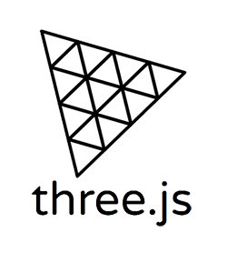
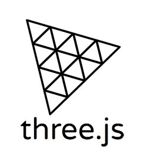

Lenguajes de programación
Java
Python
SQL (MySql, Firebase)
NoSQL (MongoDB)
HTML y CSS
 


Frameworks y Librerías
React
Spring Boot (JPA, JDBC, MCV)
React Three Fiber
WordPress


Plataformas
Git y GitHub
Eclipse
Visual Studio
Android Studio

Agencia Digital de Andalucía (Junta de Andalucía)
GKT Studios